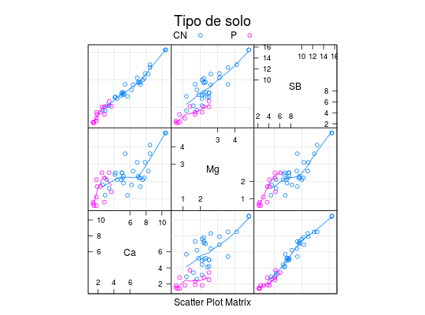

Os dados referem-se a avaliação de parcelas de solo da Amazônia. Os atributos quantidade de cálcio, magnésio e saturação de bases foram avaliados em parcelas de solo sob os sistemas de uso: pastagem, com 13 observações e capoeira nova, com 30 observações.
Um data.frame com 43 observações e 4 variáveis, em que
soloCN para Capoeira Nova e P para Pastagem.CaMgSBFERREIRA (2011), (Exemplo 6.3 pág. 240-241 e exemplo 6.6 pág. 268-269)
data(FerreiraEg6.3)#> Warning: data set ‘FerreiraEg6.3’ not foundstr(FerreiraEg6.3)#> 'data.frame': 43 obs. of 4 variables: #> $ solo: Factor w/ 2 levels "CN","P": 1 1 1 1 1 1 1 1 1 1 ... #> $ Ca : num 3.1 4.1 8.3 5.2 8.5 4.2 10.5 6.9 3.4 2.6 ... #> $ Mg : num 2.1 2.4 2.6 2.3 4.1 2.5 4.8 3.1 1.6 1.8 ... #> $ SB : num 5.3 6.8 11.1 7.7 12.8 6.9 15.5 10.4 5.3 4.5 ...library(lattice) splom(~FerreiraEg6.3[2:4], groups = solo, data = FerreiraEg6.3, type = c("p", "smooth"), grid = TRUE, auto.key = list(columns = 2, title = "Tipo de solo"))# Matrizes de covariâncias e correlações by(FerreiraEg6.3[2:4], FerreiraEg6.3[1], cov)#> solo: CN #> Ca Mg SB #> Ca 4.289759 1.2994483 5.628069 #> Mg 1.299448 0.8123678 2.124207 #> SB 5.628069 2.1242069 7.810069 #> ------------------------------------------------------------ #> solo: P #> Ca Mg SB #> Ca 0.5692308 0.2875641 0.8628205 #> Mg 0.2875641 0.5242308 0.8261538 #> SB 0.8628205 0.8261538 1.7107692by(FerreiraEg6.3[2:4], FerreiraEg6.3[1], cor)#> solo: CN #> Ca Mg SB #> Ca 1.0000000 0.6960913 0.9723342 #> Mg 0.6960913 1.0000000 0.8433212 #> SB 0.9723342 0.8433212 1.0000000 #> ------------------------------------------------------------ #> solo: P #> Ca Mg SB #> Ca 1.0000000 0.5264162 0.8743404 #> Mg 0.5264162 1.0000000 0.8723765 #> SB 0.8743404 0.8723765 1.0000000